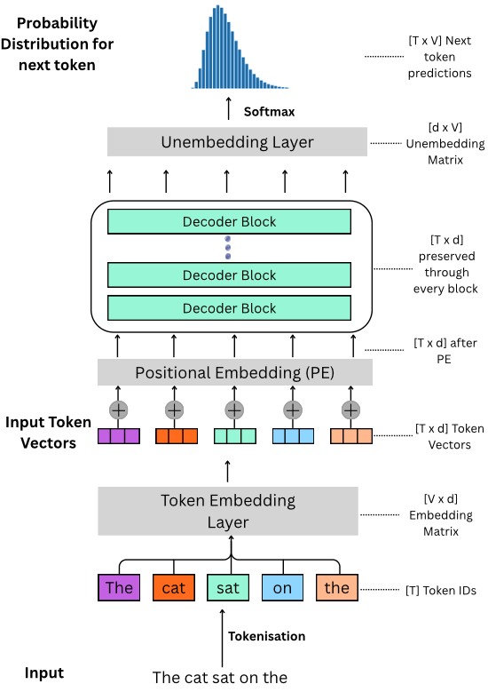
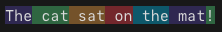
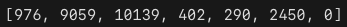
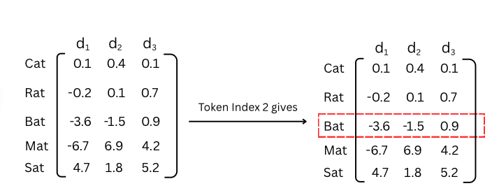

Part 1 of Decoder-Only Transformers from Scratch Series
Welcome to the first article of our multi-part series on building and training the foundations of what makes things like ChatGPT, Claude and Gemini work the way they do. The architecture is called a decoder-only transformer. By the end of this series, you’ll be able to fully understand the diagram below! Today we will look at tokenisation, embeddings, and the unembedding layer. I’ll assume you’re comfortable with basic linear algebra and have seen gradient descent before.

What does a decoder-only transformer actually do? At its core, the entire architecture has one job: given a sequence of tokens, predict the next token. That’s it. Every layer we’re about to walk through - embeddings, attention, feed-forward networks - exists to
take the tokens seen so far and produce a probability distribution over the entire vocabulary for what should come next. The word “decoder” in “decoder-only” refers to this: the model decodes the most likely continuation of a sequence.
When ChatGPT writes a paragraph, it’s doing this one token at a time. It predicts token 1, appends it to the input, predicts token 2, appends it, and so on.
What is a Token?
“Claude Opus 4.7 has a context window of 1M tokens”
“Gemini 1.5 Pro has a context window of 2M tokens”
For readers that have heard of these numbers getting thrown around without any context (haha get it?) and wonder “what is a token really?”
A token is a fundamental unit of data (like bits in a computer, or genes in biology) in natural language processing (NLP) and it describes how letters, numbers, special characters and punctuations are broken up. A token can be anything from a single character, to chunks of characters assigned arbitrarily or through a given algorithm.
Tokenisation Schemes
Consider the following sentence (we refer to the sequence length as \(T\)):
\[\text{The cat sat on the mat!}\]
We can imagine breaking this sentence up into tokens in many different ways:
Character Level Tokenisation: Where we split each character as a separate token. So the sentence above becomes
['T', 'h', 'e', ' ', 'c', 'a', 't', ' ', 's', 'a', 't', ' ', 'o', 'n', ' ', 't', 'h', 'e', ' ', 'm', 'a', 't', '!']Word Level Tokenisation: Where we split the text based on some delimiter (in this case let’s take the space) as separate tokens. So the sentence above becomes
['The', 'cat', 'sat', 'on', 'the', 'mat!']Subword Level Tokenisation: Where we split the text based on some rule or algorithm. E.g. I want to take 4-length chunks as my tokens. So the sentence above becomes
['The ', 'cat ', 'sat ', 'on t', 'he m', 'at! ']
Each of these schemes comes with pros and cons:
| Tokenisation Scheme | Pros | Cons |
|---|---|---|
| Character-Level | Tiny vocabulary (e.g. 128 for ASCII). No out-of-vocabulary (OOV) tokens — every possible input can be represented. | Sequences become extremely long. “The cat sat on the mat!” becomes 27 tokens. This is a problem because attention has \(O(T^2)\) cost - doubling sequence length quadruples compute. Individual characters also carry almost no semantic meaning on their own. |
| Word-Level | Clean and intuitive - each token maps to a word humans recognise. Shorter sequences than character-level. | Vocabulary explodes. English has ~170,000 words in current use, and that’s before you count misspellings, slang, conjugations (run/ran/running/runs), and multilingual text. Any word not in the vocabulary becomes an <UNK> token, losing all information. |
| Subword-Level | Common words stay as single tokens (“the”, “and”), while rare words get broken into meaningful pieces (“un” + “break” + “able”). Keeps vocabulary manageable (~50K–130K) while handling novel words gracefully. | Tokenisation is no longer human-intuitive - word boundaries don’t always make linguistic sense. The best algorithms are also language-dependent since the rules are learnt from a training corpus: if they’re trained on English, it wastes tokens on Chinese/Japanese text, and vice versa. (Fun Fact - this is why some models are better at “token-efficient” code - their tokenisers were trained on more python/C++ files). |
Subword tokenisation gives us the best of both worlds: a manageable vocabulary size without sacrificing the ability to represent any input. This is why virtually every modern LLM uses some variant of it.
Vocabulary and Token IDs
The number of unique tokens that can be represented by a tokenisation scheme is called its vocabulary. Each unique token is assigned a token ID within this vocabulary set.
For example, if we’re using character level tokenisation for ASCII text then the vocabulary size is 128 (95 printable characters - uppercase A-Z, lowercase a-z, 0-9, and symbols - and 33 non-printable control characters).
Modern LLMs like GPT, Claude and Gemini use their own proprietary tokenisation algorithms but a very common one used in many older GPT models and open-source models is called Byte-Pair Encoding (BPE). Andrej Karpathy has an excellent tutorial on BPE here but it’s a subword level tokenisation algorithm. If we want to tokenise the above sentence using the GPT Tokeniser, it would look something like this:


What is an Embedding?
Once we’ve converted an input text into tokens and assigned them to their corresponding token IDs, we need to find a way of capturing semantic meanings. Token IDs are randomly assigned and token ID 96 has no correspondence to token ID 97. But we want the representation of the word ‘king’ to be close to the word ‘queen’ (even if their token IDs are not). This is where embedding vectors come into play.
An embedding vector is a higher-dimensional numeric representation for a particular token ID. Each embedding vector tries to capture nuances, connections and semantic meanings between tokens. We do this through an embedding layer.
An embedding layer is a matrix with \(d\) columns and \(V\) rows where \(V\) is the size of the tokeniser’s vocabulary and \(d\) is the dimensions of the embedding vector (or embedding dim). It acts as a lookup table for the token IDs.

In practice, this is exactly what deep learning frameworks do - an optimised index lookup: embedding_matrix[token_id].
How the Embedding Lookup Actually Works
The figure above shows the intuition: to get the embedding for token ID 2, we just grab row 2 of the matrix.
Under the hood, this index lookup is mathematically equivalent to multiplying a one-hot vector by the embedding matrix.
A one-hot vector is a vector of length \(V\) (the vocabulary size) where every element is 0 except for a single 1 at the position of the token ID. For example, if our vocabulary has 5 words and we want token ID 2 (“Bat”), our one-hot vector is: \[\mathbf{x} = [0, 0, 1, 0, 0]\]
When we multiply this one-hot vector by the embedding matrix \(W_e\) of shape \([V \times d]\) we get:
\[\mathbf{e} = \mathbf{x} \cdot W_e = [0, 0, 1, 0, 0] \cdot \begin{bmatrix} 0.1 & 0.4 & 0.1\\ -0.2 & 0.1 & 0.7\\ -3.6 & -1.5 & 0.9\\ -6.7 & 6.9 & 4.2\\ 4.7 & 1.8 & 5.2\\ \end{bmatrix} = [-3.6, -1.5, 0.9]\]
The result is exactly row 2 of the matrix — the embedding vector for “Bat”. The one-hot vector acts as a selector: the 1 “activates” the corresponding row, and the 0s zero out everything else.
The Geometry of Meaning
This is perhaps the most beautiful property of learned embeddings: the directions in embedding space encode semantic relationships.
The classic demonstration is the king–queen analogy. After training, the following approximate relationship holds between word vectors:
\[\overrightarrow{\text{king}} - \overrightarrow{\text{man}} + \overrightarrow{\text{woman}} \approx \overrightarrow{\text{queen}}\]
What does this mean? The vector from “man” to “king” represents the concept of royalty. When we apply that same vector (that same direction and magnitude) starting from “woman”, we arrive near “queen”. The embedding space has organised itself so that analogous relationships correspond to parallel directions.
Remarkably, this emerges purely from training on text data. The model learns that “king” and “queen” appear in similar contexts but differ in the same way that “man” and “woman” differ, and it encodes this pattern geometrically.
As a caveat, this is a simplified demonstration; real embedding spaces are far messier, but the principle that directions encode relationships holds broadly.
The Embedding Layer as a Learned Parameter
It’s worth emphasising: the embedding matrix is not hand-crafted or pre-computed. It is initialised randomly and trained alongside every other parameter in the model via gradient descent.
At the start of training, “king” and “queen” have random embedding vectors with no meaningful relationship. Over billions of training examples, the model adjusts these vectors so that tokens appearing in similar contexts drift closer together in embedding space, and the geometric structure described above emerges organically.
This has a subtle but important implication: the quality of your embeddings is bounded by the quality and quantity of your training data. If your training corpus contains very little medical text, the embeddings for medical terms will be poorly differentiated. If it contains biased associations (e.g. certain professions disproportionately linked with one gender), those biases will be encoded geometrically in the embedding space.
Dimensions & Scale
To ground this in reality, here are the actual embedding dimensions used by well-known open-source models:
| Model | Vocab Size (\(V\)) | Embedding Dim (\(d\)) | Embedding Parameters |
|---|---|---|---|
| GPT-2 | 50,257 | 768 | 38.6M |
| GPT-3 (175B) | 50,257 | 12,288 | 617.5M |
| LLaMA 2 (7B) | 32,000 | 4,096 | 131.1M |
| LLaMA 3 (8B) | 128,256 | 4,096 | 525.3M |
A few things stand out: The embedding layer alone can have hundreds of millions of parameters. GPT-3’s embedding matrix is \(50{,}257 \times 12{,}288 \approx 617\text{M}\) numbers. That’s a significant fraction of the total model - and this is just the lookup table before any actual computation happens. This is why we need to be careful with the vocabulary size and embedding dimension.
Larger \(d\) means richer representations but higher cost. Every subsequent layer in the transformer operates on vectors of size \(d\). Since attention has a cost proportional to \(d\) (more on this in a later post), doubling the embedding dimension affects the cost of every layer above it. This is the core architectural tradeoff: expressive embeddings vs. computational budget.
Notice LLaMA 3 quadrupled its vocabulary from LLaMA 2 (32K → 128K). A larger vocabulary means common multi-character sequences get their own token, which shortens sequences (fewer tokens per sentence = faster inference). But it also means a larger embedding matrix and a larger unembedding matrix.
We’ve now followed our input from raw text → tokens → embeddings → through the decoder blocks. The output is a matrix of shape \([T \times d]\) — one vector per position. But remember: the model’s job is to predict the next token. So we need to convert these abstract \(d\)-dimensional vectors back into a probability over every word in the vocabulary. That’s what the unembedding layer does.
The Unembedding Layer
At the very top of our architecture diagram sits the unembedding layer - the mirror image of the embedding layer.
After the input has passed through every decoder block, the model produces an output of shape \([T \times d]\) - one \(d\)-dimensional vector per token position. But we need a probability distribution over the vocabulary to predict the next token. We need to go from \(d\) dimensions back to \(V\) dimensions (one score per possible token). The unembedding layer does exactly this. It’s a matrix \(\mathbf{W_u}\) of shape \([d \times V]\) that projects each output vector back into vocabulary space: \[\text{logits} = \mathbf{h} \cdot \mathbf{W_u}\] where \(\mathbf{h}\) is the \([T \times d]\) output from the final decoder block, and the result is a \([T \times V]\) matrix of logits — raw, unnormalised scores for every token in the vocabulary at every position.
Because we want a full probability distribution - not just a winner, but how confident the model is across all candidates. This lets us sample creatively from the top-k most likely tokens rather than always picking the single most probable one. Softmax gives us exactly that.
The softmax function is defined as: \[P(\text{token}_i) = \frac{e^{\text{logit}_i}}{\sum_{j=1}^{V} e^{\text{logit}_j}}\]
The token with the highest probability is (roughly speaking) the model’s prediction for what comes next.
Weight Tying
Here’s an elegant detail: in many modern transformers, the unembedding matrix is the transpose of the embedding matrix: \[\mathbf{W}_u = \mathbf{W}_e^T\] This is called weight tying, and it means the model uses the same parameters for both “looking up” token meanings (embedding) and “predicting” tokens (unembedding). Intuitively this makes sense — if two tokens have similar embeddings (similar meanings), the unembedding should also score them similarly when predicting the next token. Weight tying also halves the parameter count of these two layers. For GPT-3, that’s saving roughly 617 million parameters. Not all models use weight tying (GPT-2 does, LLaMA does not), but it connects the top and bottom of the architecture diagram in a satisfying way: the same matrix that converts token IDs into meaning also converts meaning back into token predictions.
What’s Next
But these embedding vectors have no sense of order. “The cat sat on the mat” and “The mat sat on the cat” produce identical sets of embedding vectors — the model can’t tell them apart. Clearly, word order matters for meaning. That’s what positional encoding solves, and it’s the subject of the next post.